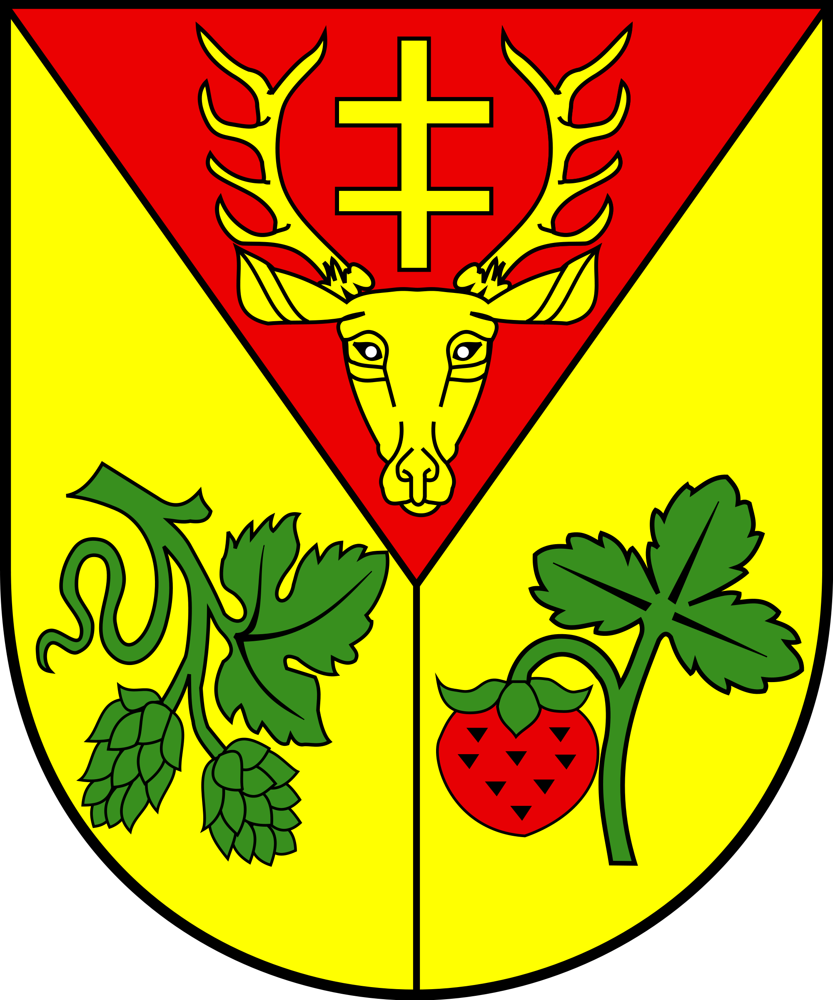

Gospodarstwo agroturystyczne „Pod Sosnami” znajduje się w powiecie leżajskim, w gminie Leżajsk, w miejscowości Giedlarowa.
Powiat leżajski leży w północno – wschodniej części województwa podkarpackiego i obejmuje swym obszarem miasto Leżajsk, oraz cztery gminy: gminę Leżajsk, gminę Nowa Sarzyna, gminę Grodzisko Dolne i gminę Kuryłówka. Miejscowość Giedlarowa jest największą wsią gminy i jednocześniejedną z najdłuższych na Podkarpaciu. Położona wzdłuż drogi Leżajsk – Łańcut ciągnie się prawie przez 7 km. Lokowana została w 1409 roku przerz Mikołaja Giedlara – mieszczanina z Leżajska.
Nocleg na Podkarpaciu urozmaicają gościom liczne przyrodnicze atrakcje. Bogactwem Ziemi Leżajskiej jest przede wszystkim czyste, nieskażone środowisko naturalne. Lasy obfitują w grzyby i jagody, dzięki czemu s świetnym zapleczem rekreacyjnym regionu. Wśród atrakcji przyrodniczych wiodą: jedyne w polsce naturalne stanowisko różanecznika żółtego zwanego azalią pontyjską, żeremia bobrów, oraz rezerwaty „Suchy Łuk” i „Las Klasztorny”. Wypoczynek nad wodą zapewniają m.in. zalewy w Ożannie, w Brzózie Królewskiej i zbiorniki wodne „Czyste” i „Floryda”.
Wśród zabytków warto zwiedzić między innymi:
Bazylikę OO. Bernardynów wraz ze słynnymi barokowymi organami oraz bogatymi zbiorami muzealnymi. Co roku w okresie letnim odbywa się w Bazylice Międzynarodowy Festiwal Muzyki Organowej i Kameralnej. Cmentarz żydowski z Kaplicą sławnego cadyka Elimelecha Muzeum Ziemi Leżajskiej. Liczne XIX-wieczne przydrożne kapliczki